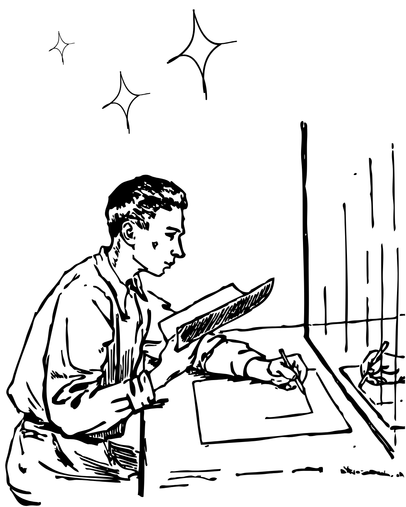

O sketch, ou rascunho, é a etapa inicial e mais livre do processo artístico. Diferente de uma obra finalizada, ele não busca a perfeição, mas sim o início do conceito de uma ideia. É o "esqueleto" que sustenta qualquer desenho complexo.
Sua principal função é o estudo e a experimentação, o rascunho é utilizado como uma ferramenta de diagnóstico: através dele, conseguimos identificar vícios de traço e entender como o artista processa formas e volumes antes de aplicar o acabamento.
Não existem regras rígidas. Normalmente é feito com grafite, canetas, nanquim ou ferramentas digitais. O foco deve ser na agilidade e na percepção visual. Para praticar, utiliza-se a técnica de observação e a repetição de formas geométricas simples para construir objetos complexos